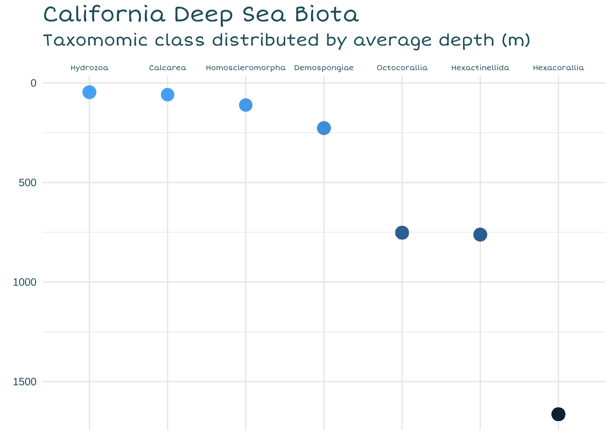
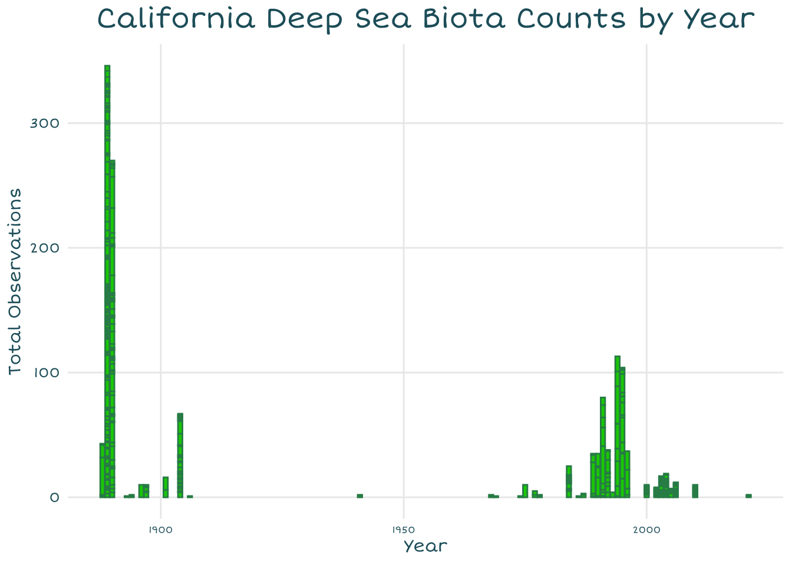
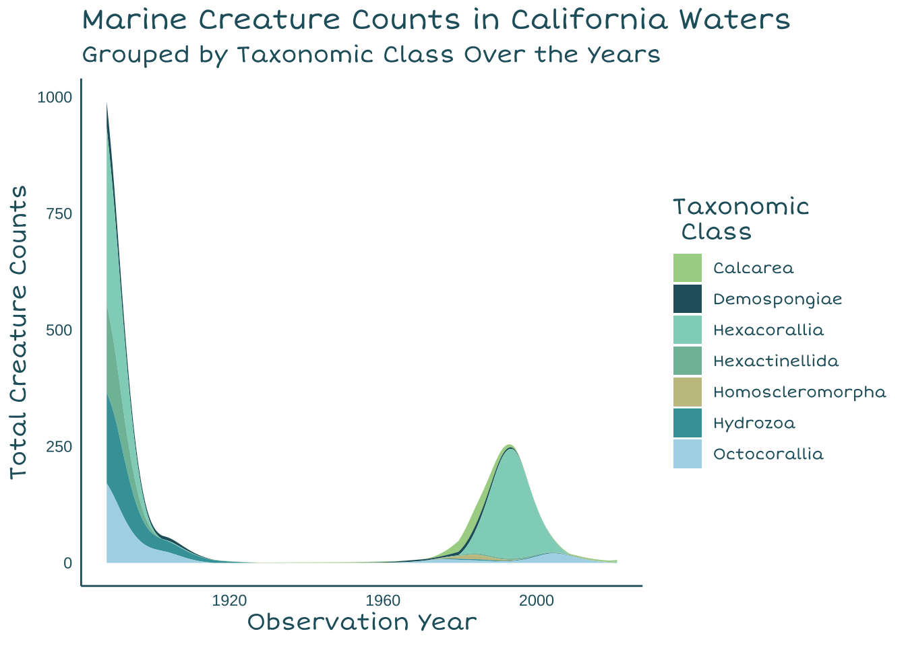
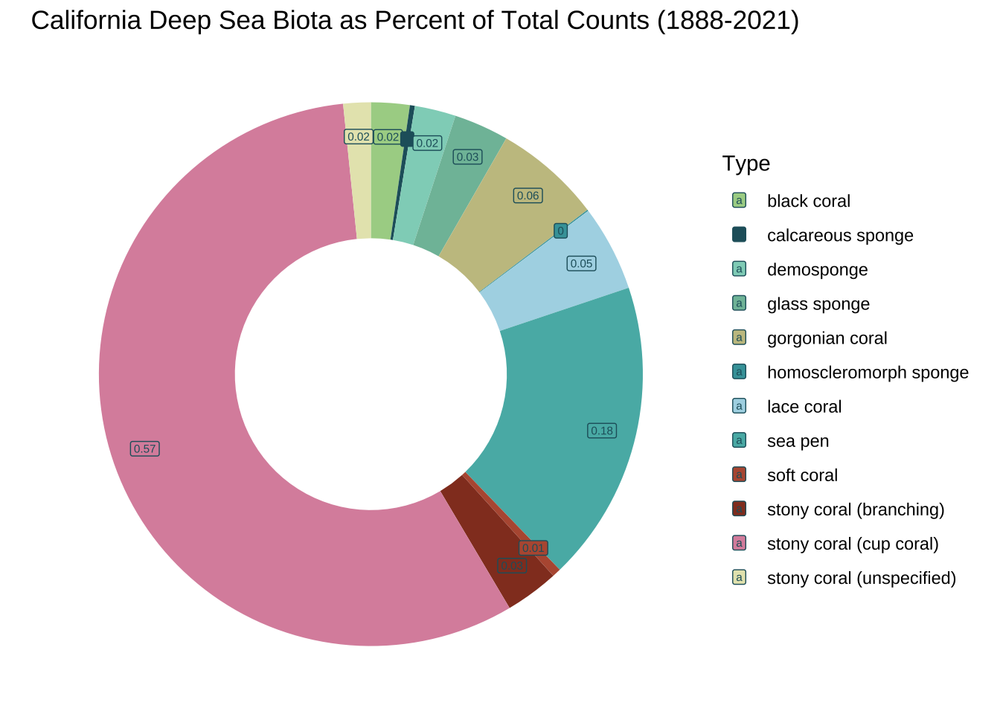

# Prep code --------------------------------------------------------------------------------
# Load libraries
librarian::shelf(tidyverse, here, janitor, dplyr, ggstream, showtext)
# Create palette and add custom fonts
ghibli_pal <- c("#A9D294","#225F6B", "#8FD3C2", "#7FBEA7", "#C6C28F","#41A1A8", "lightblue", "#57B6B3", "#B7593F", "#933D26", "#DB91AB", "#E6E6BB" )
font_add_google(name = "Short Stack", family = "shortstack")
showtext_auto()Deep-Sea-Corals-Infographic
# Initial cleaning -----------------------------------------------------------------------------
# Load in the coral data
deep_sea_coral <- read_csv(here("data", "deep_sea_coral.csv"))
# Filter to only US observations
US_deep_sea_coral <- deep_sea_coral %>%
filter(Country == "USA")
# Filter to California observations
Filtered_deep_sea_coral <- US_deep_sea_coral %>%
filter(LargeMarineEcosystem == "California Current")
# Select only relevant columns for initial data vis
coral_data <- Filtered_deep_sea_coral %>%
select(c('ScientificName',
'VernacularNameCategory',
'Phylum',
'Class',
'Order',
'Genus',
'Locality',
'latitude',
'longitude',
'DepthInMeters',
'ObservationDate',
'ObservationYear',
'IndividualCount'))
# Remove data points for Oregon, Washington, and specifically Columbia river data
coral_data_filtered <-coral_data[!grepl("Oregon", coral_data$Locality),]
coral_data_filtered <-coral_data_filtered[!grepl("Washington", coral_data_filtered$Locality),]
coral_data_final <-coral_data_filtered[!grepl("Columbia", coral_data_filtered$Locality),]
# Check to see what data type the DepthInMeters column is
class(coral_data_final$DepthInMeters)[1] "character"# Convert the depth column to integers
coral_data_final$DepthInMeters <- as.integer(coral_data_final$DepthInMeters)
# Create a mean depth by class variable
mean_depth_class <- coral_data_final %>%
group_by(Class) %>%
mutate(Mean_Depth= mean(DepthInMeters))
# Find the sum of counts for each common name biota
coral_data_counts <-coral_data_final %>%
group_by(VernacularNameCategory) %>%
mutate(sum_counts = sum(IndividualCount))
# Remove NAs
mean_depth_clean <-mean_depth_class %>%
drop_na()
# Create a df with the mean counts by year and taxa Class
mean_count_class <- mean_depth_clean %>%
group_by(Class, ObservationYear) %>%
summarise(sum_count = sum(IndividualCount))# Assemble graphs -----------------------------------------------------------------------------
# Lollipop chart ---------------------------------
# Line graph with icons for class by depth
depth_graph <- ggplot(mean_depth_class, aes(x= reorder(Class, Mean_Depth), y= Mean_Depth)) +
geom_point(aes(colour = -Mean_Depth,
size= 4)) +
geom_path() +
scale_y_reverse() +
scale_x_discrete(position= "top") +
labs(title= "California Deep Sea Biota",
subtitle= "Taxomomic class distributed by average depth (m)",
x= element_blank(),
y= element_blank())+
theme_minimal() +
theme(legend.position= "none",
axis.text.x = element_text(color= "#225F6B",family= "shortstack", size = 6),
axis.text.y= element_text(color= "#225F6B"),
plot.title = element_text(color= "#225F6B",family= "shortstack", size = 18),
plot.subtitle= element_text(color= "#225F6B",family= "shortstack", size = 14))
# Histogram ----------------------------------
# Bar graphs of observations over time
histogram <-ggplot(coral_data_final, aes(x= ObservationYear, y= IndividualCount)) +
geom_col(color = "seagreen",
fill= "green3") +
labs(title= "California Deep Sea Biota Counts by Year",
x= "Year",
y= "Total Observations")+
scale_x_continuous(breaks = scales::pretty_breaks(n = 5)) +
theme_minimal() +
theme(plot.title = element_text(color= "#225F6B",family= "shortstack", size=18, hjust= 0.5),
axis.title = element_text(color="#225F6B", family= "shortstack"),
axis.text.x = element_text(color= "#225F6B",family= "shortstack", size = 6),
axis.text.y= element_text(color= "#225F6B",family= "shortstack"),
plot.subtitle= element_text(color= "#225F6B",family= "shortstack", size = 14),
panel.grid.minor = element_blank())
# Streamgraph ---------------------------------
streamgraph_corals <-ggplot(mean_count_class, aes(x = ObservationYear, y = sum_count, fill= Class)) +
geom_stream(type= "ridge") +
scale_fill_manual("Taxonomic \n\ Class", values= ghibli_pal) +
labs(title= "Marine Creature Counts in California Waters",
subtitle= "Grouped by Taxonomic Class Over the Years",
x= "Observation Year",
y= "Total Creature Counts")+
theme_minimal() +
theme(axis.line = element_line(color="#225F6B"),
plot.background = element_blank(),
panel.grid.major = element_blank(),
panel.grid.minor = element_blank(),
panel.border = element_blank(),
axis.text.x = element_text(color= "#225F6B"),
axis.text.y = element_text(color= "#225F6B"),
axis.title.x = element_text(color= "#225F6B"),
axis.title.y = element_text(color= "#225F6B"),
title = element_text(family= "shortstack", face= "bold", size= 13, color= "#225F6B"),
legend.text = element_text(family= "shortstack", face= "bold", color= "#225F6B"))
# Doughnut chart -------------------------------
# Doughnut chart with percent of total counts for organisms (common name)
coral_data_counts_fixed <- coral_data_final %>%
group_by(VernacularNameCategory) %>%
summarize(sum_count = sum(IndividualCount))
# Compute percentages
coral_data_counts_fixed$fraction = coral_data_counts_fixed$sum_count / sum(coral_data_counts_fixed$sum_count)
# Compute the cumulative percentages (top of each rectangle)
coral_data_counts_fixed$ymax = cumsum(coral_data_counts_fixed$fraction)
# Compute the bottom of each rectangle
coral_data_counts_fixed$ymin = c(0, head(coral_data_counts_fixed$ymax, n=-1))
coral_data_counts_fixed$Type <- coral_data_counts_fixed$VernacularNameCategory
# Compute label position
coral_data_counts_fixed$labelPosition <- (coral_data_counts_fixed$ymax + coral_data_counts_fixed$ymin) / 2
# Compute a good label
coral_data_counts_fixed$label <- paste0(round(coral_data_counts_fixed$fraction, 2))
# Assemble the graph
doughnut <-ggplot(coral_data_counts_fixed, aes(ymax=ymax, ymin=ymin, xmax=4, xmin=3, fill=Type)) +
geom_rect(show.legend = FALSE) +
geom_label( x=3.75, aes(y=labelPosition, label=label),
size=2,
show.legend = TRUE,
colour= "#225F6B") +
scale_fill_manual(values = ghibli_pal) +
labs(title= "California Deep Sea Biota as Percent of Total Counts (1888-2021)") +
coord_polar(theta="y") +
xlim(c(2, 4) ) +
theme_void()# Show graphs
depth_graph
histogram
streamgraph_corals
doughnut
# Save graphs as png----------------------------------------------------------------------------
# Lollipop chart saved
ggsave(
plot = depth_graph,
filename = "depth_graph_corals.png"
)
# Histogram saved
ggsave(
plot = histogram,
filename = "histogram_corals.png"
)
# Streamgraph saved
ggsave(
plot = streamgraph_corals,
filename = "streamgraph_corals.png"
)
# Doughnut chart saved
ggsave(
plot = doughnut,
filename = "doughnut_corals.png"
)
# Save graphs as png----------------------------------------------------------------------------
#Note: You can use a transparent background for ease of drawing and tracing as I did, by setting fill to transparent in theme or using the transparent bg option in save...
#transparent_bg_histogram <- histogram + theme(rect = element_rect(fill = "transparent"))
#ggsave(plot = histogram,filename = "histogram_corals.png", bg= "transparent")